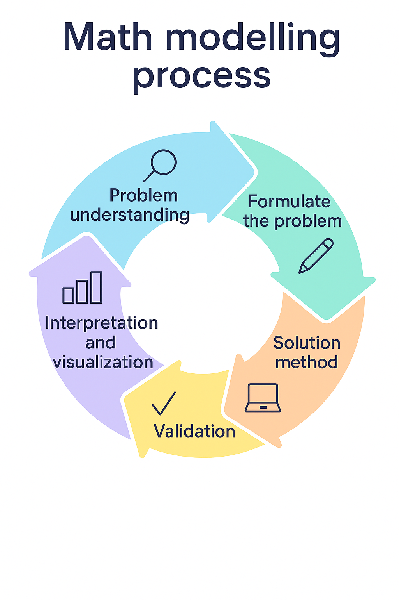
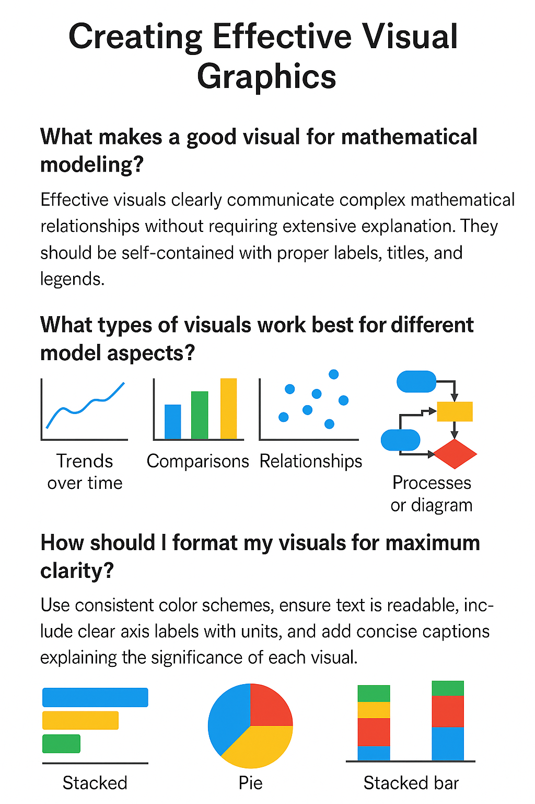

ขั้นตอนการสร้างแบบจำลอง
Modeling Process Steps
- เข้าใจปัญหา: วิเคราะห์สถานการณ์จริง แปลความหมายในแง่ต่างๆ และแยกแยะปัญหาคืออะไร
- ตั้งสมมติฐาน: กำหนดสิ่งที่ควรพิจารณาและตัดสิ่งที่ไม่จำเป็นหรือซับซ้อนออก เพื่อให้แก้ปัญหาได้ง่ายขึ้น
- กำหนดตัวแปร: นิยามสิ่งที่ต้องการวัดหรือติดตาม เช่น ระยะทาง เวลา จำนวนคน
- สร้างแบบจำลอง: ใช้กฎ ความสัมพันธ์ เพื่อสร้างสมการทางคณิตศาสตร์ที่อธิบายระบบ
- คำนวณ / จำลอง: หาคำตอบโดยใช้การวิธีวิเคราะห์ โปรแกรมคำนวณ ประมาณค่าแบบจำลอง
- ตรวจสอบและปรับปรุง: ทดสอบว่าแบบจำลองสอดคล้องกับความเป็นจริงและตอบโจทย์หรือไม่ ได้แนวทางปรับปรุงให้ดีขึ้น
- นำเสนอผลลัพธ์: เขียนรายงาน สร้างกราฟ ตีความ แปลผล เชื่อมโยง และสื่อสารผลลัพธ์อย่างชัดเจน กระชับ


- Understand the Problem: Analyze the real-world situation, read carefully, and identify what is being asked.
- Make Assumptions: Simplify the problem by deciding what can be ignored or estimated.
- Define Variables: Identify what quantities need to be tracked or related (e.g., time, distance, number of people).
- Build the Model: Use math, laws and relationships to describe relationships between variables and construct system.
- Solve or Simulate: Analytical and numerical computations, approximations to get model results.
- Validate and Refine: Check if the model works well; compare it to reality and improve if needed.
- Present Results: Report, graph, interpretation, making connection and clear visualization.